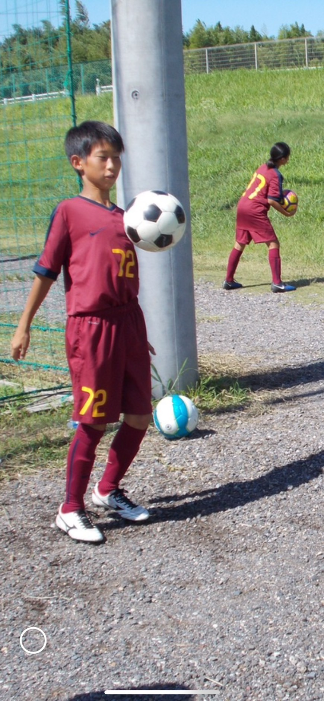

Welcome!
Myname:Ryoma Fukunaga
Hobby:Snow Board,soccer
From:Shiga prefecture
I was born in Otsu City, Shiga Prefecture. Otsu City has Lake Biwa and beautiful nature. I grew up in such a town and started playing soccer in the first grade of elementary school. At first, I started playing soccer just for fun with my friends, but the more I played, the more I fell in love with the sport. I played ball every day, practiced, and participated in many tournaments. I continued to play soccer until my senior year of high school, and it became a big part of my life. Soccer was not only fun, but also had many hardships. There were times when I was disappointed after losing a game. But the memories of working hard together with my friends are still my most precious treasures. Through soccer, I learned the importance of never giving up and the importance of cooperation. My hobby is snowboarding. In the winter, I go to the snowy mountains to enjoy snowboarding. At first I fell down a lot, but after going a few times I gradually got better and now I really enjoy it and look forward to winter. When I am snowboarding, I forget all the bad things and feel refreshed. I don't like studying very much. I am especially bad at math. Calculations and graphs are too difficult for me, and I often lose track of them. But I don't want to be left in a situation where I don't understand something, so I try my best little by little. Even if it is something I am not good at, I want to be able to do it without giving up, even if only a little.
This is a picture of me in my first year of junior high school. I remember that I really enjoyed playing soccer.